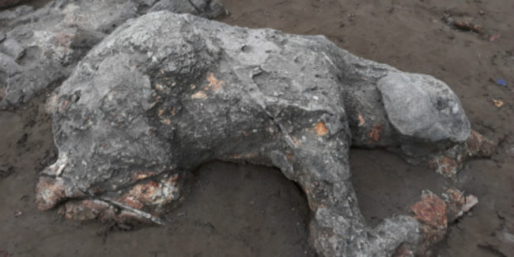

5 April 2025 | Penulis: Redaksi Kumparan
PADANG – Kejadian aneh terjadi di SMP Maria yang melibatkan seorang siswa berinisial NW, berusia 14 tahun. NW dikenal sebagai sosok pendiam dan sering kesulitan dalam pelajaran matematika...
Menurut beberapa teman sekelasnya, NW memang sering kali kesulitan dalam pelajaran matematika, dan saat ujian, ia tampak sangat cemas. Bahkan, ketika guru mengumumkan nilai, NW terlihat sangat terkejut dan akhirnya terjadi peristiwa yang aneh...
Saat diberitahu bahwa ia harus mengikuti remedial, tubuh NW secara perlahan berubah menjadi batu. Fenomena tersebut membuat seluruh sekolah terkejut dan panik. Beberapa pihak berwenang sudah terlibat dalam penyelidikan untuk memahami kejadian yang sangat langka ini...
Sejak peristiwa tersebut, para ahli psikologi dan ilmuwan mencoba mencari tahu apakah perasaan stres dan kecemasan yang berlebihan bisa menyebabkan perubahan fisik yang ekstrem pada seseorang...
Namun, belum ada penjelasan pasti mengenai fenomena ini, dan banyak spekulasi bermunculan di media sosial mengenai apa yang sebenarnya terjadi dengan NW.
Sejak kejadian itu, keluarga NW dan pihak sekolah memutuskan untuk menjaga kerahasiaan lebih lanjut mengenai kejadian tersebut, namun banyak yang menganggap ini sebagai fenomena yang belum pernah terjadi sebelumnya...